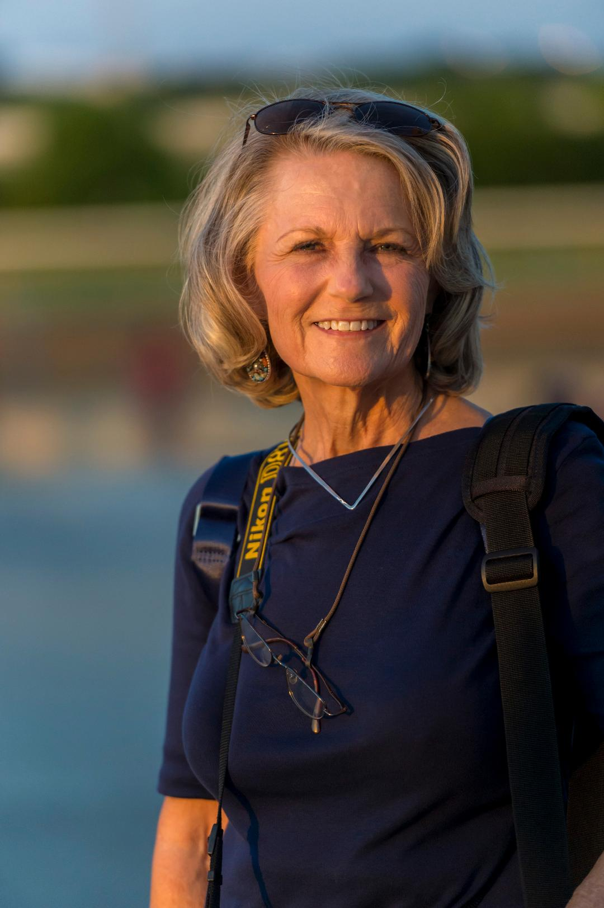

Looking for a unicorn in photography? I am a professional photographer with an eye for the beautiful. Over the last few years, I focused my lens on those beautiful creatures called "horses" as I photograph horse-racing around the U.S. Take a look at my work and say hello using the contact link below if you would like me to photograph your event.
|
|  |
After years of working in the Insurance sector, I was able to retire and pursue my love of photography. I love many aspects of photography, but in the last several years, my friends turned me on to horse-racing events. I now travel the U.S. photographing racing events and couldn't be happier. My work is published in magazines and other media. I love traveling and searching for the unicorn. Contact Me |
Website by UberLight Creations